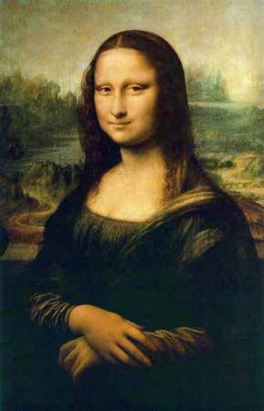
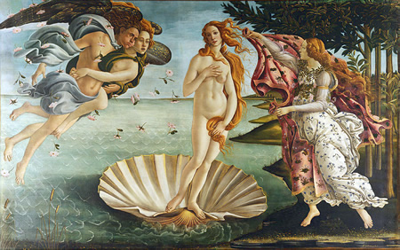
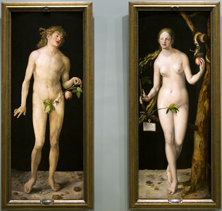
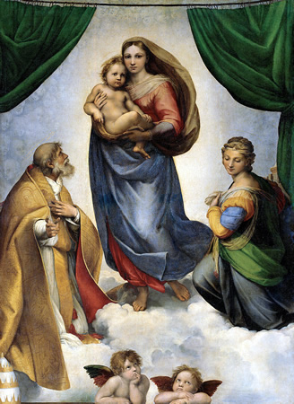
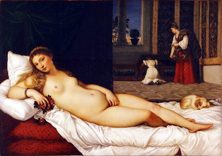
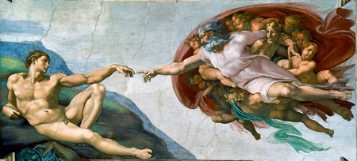

Pinturas más controversiales
"La Mona Lisa"
Es la pintura mejor guardada del mundo, realizada por Leonardo da Vinci en alguna fecha que aún no se establece con exactitud, entre los años 1503-1519, actualmente se encuentra en el Museo del Louvre, París.
"La Virgen huso"

También conocida como Virgen de la rueca, fue pintada en 1501, por Leonardo da Vinci. Muestra a un Jesús de niño alejándose de los brazos de su Madre y mirando la cruz, como signo de su destino .
"La Verónica

Esta obra junto a "La Santa Faz", muestran una de las reliquias cristianas más importantes el paño de la Verónica, pintada en 1580, por El Greco.
"Nacimiento de venus
Se trata de uno de los cuadros más representativos del renacimiento italiano, pintado entre 1484 y 1486, por Sandro Botticelli. Se encuentra actualmente en la Galería Uffizi, Florencia.
"Adán y Eva"
Obra de grandes dimensiones actualmente en el Museo del Prado, pintada en 1504, por Alberto Durero.
"Madonna Sixtina"
Obra al óleo de tema religioso. Autor: Rafael Sanzio, pintada por encargo del Papa Julio II en 1512.
"Venus de Urbino"
Tela al óleo pintada en 1538, por Tiziano, considerado uno de los mayores impulsores del arte renacentista.
"La creación de Adán"
Trozo de fresco pintado Miguel Ángel (1512) sobre yeso, en el techo de la Capilla Sixtina en el Vaticano. Lugar donde se encuentran las obras de pintura y escultura, más reconocidas del Renacimiento.